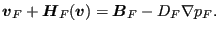
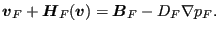

Keyword type: model definition
This keyword is used to define the Stefan-Boltzmann constant, absolute zero temperature and the universal gravitational constant in the user's units. For 3D fluid calculations only absolute zero temperature is needed, for radiation type boundary conditions both absolute zero temperature and the Stefan-Boltzmann constant must be defined. They are defined by the two parameters ABSOLUTE ZERO and STEFAN BOLTZMANN. The universal gravitational constant is required for general gravitational loading, e.g. for the calculation of orbits and is defined by the parameter NEWTON GRAVITATION.
First line:
Example: *PHYSICAL CONSTANTS, ABSOLUTE ZERO=0, STEFAN BOLTZMANN=5.669E-8
for time in s, length in m, mass in kg and temperature in K (unit of the
Stefan-Boltzmann constant:
W m K.
K.
Example: *PHYSICAL CONSTANTS, NEWTON GRAVITY=6.67E-11
for time in s, length in m, mass in kg and temperature in K (unit of the
universal gravitational constant:
N m kg
kg ).
).
Example files: beamhtbf, oneel20cf, cubenewt.